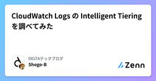

DELTAテックブログのフィード
https://zenn.dev/p/team_delta
DELTAは、ベンチャースタートアップなどの成長企業向けに、ソフトウェア・プロダクト開発や技術選定支援などの技術支援事業を提供しています。 また、成長企業向けに様々な事業支援を提供するSEVENRICH GROUPに属して、グループ内の事業会社や、出資先の支援もおこなっています
フィード

API Gateway + Lambda統合でキャッシュを使うときに忘れがちな2つのポイント
DELTAテックブログのフィード
この記事のポイントAPI Gateway (REST API) + Lambda プロキシ統合でキャッシュを有効にしたとき、クエリパラメータごとにキャッシュを分けたいケースがあります。この時私が忘れがちな設定を、備忘録として2点まとめます。メソッドリクエストと統合リクエストの両方でパラメータ設定が必要Terraform の再デプロイトリガーに設定内容を含める必要があるこれらを押さえておかないと、「設定したはずなのにキャッシュキーが効かない」という状態に陥ります。 前提: やりたいことAPI Gateway のキャッシュを有効にしつつ、クエリパラメータごとにキャッシュ...
3日前

CloudWatch Logs の Intelligent Tieringを調べてみた
DELTAテックブログのフィード
どうも、DELTAの馬場です。先日 CloudWatch Logs の Intelligent Tiering が発表されました。記事を見て「これはコスト削減に良いのでは?」と思ったので、軽く調べてみました。https://aws.amazon.com/jp/about-aws/whats-new/2026/07/amazon-cloudwatch-intelligent-tiering/ 機能で気になった 3 点公式ドキュメントを読んで気になったのは以下の 3 つです。1. S3 の Intelligent-Tiering と違って、監視にも移行にも料金がかからないS3 ...
7日前

AWS Lambdaの"Self-Managed Code Storage"を試してみた
DELTAテックブログのフィード
どうも、DELTAの馬場です。2026 年 7 月に Lambda の self-managed code storage が発表されました。自分のS3 バケットに置いたコードを Lambda がコピーせず直接参照するという機能です。発表文にはこうあります。reduces function activation time after function creates and updates by removing the copy stepこれを読んで「お、Lambda の起動時間が短くなるのか」と思い、試してみることにしました。今回の記事では同一コードの Lambda を...
8日前
OpenSearchの専用マスターノードを無効化するために必要なことを考える
DELTAテックブログのフィード
はじめにどうも、馬場です!今回の記事では、タイトルにもあるように専用マスターノードの ”無効化” について集めた情報を備忘がてら記載します。背景としては、クラウドコスト削減のためにOpenSearchの専用マスターノードを無効化できないか？という仮説があり、その調査をしてみると世の中にOpenSearchの専用マスターノードを有効化する記事はあるものの、無効化するケースは見つけられなかったので自分用に集めた情報が他の方々の役に立てばと思ったためです。 OpenSearchのクラスター構成を変更してコスト削減を目指す※ 最後に手順をまとめるので、手を動かすのは 最後 でお願...
4ヶ月前
GitHub ActionsでECSタスクのセキュリティグループが設定されなかった問題
DELTAテックブログのフィード
概要GitHub Actionsでnoelzubin/aws-ecs-run-task@v1.0アクションを使用してECSタスクを実行した際、ログ上ではセキュリティグループが設定されているように見えるが、実際のタスクには適用されていなかった問題と、その解決方法について記録します。 発生した問題 症状GitHub ActionsからAlembicのデータベースマイグレーションタスクを実行RDSへの接続がタイムアウトで失敗エラーメッセージ: Connection timed outpsycopg2.OperationalError: connection to s...
5ヶ月前
Rails 8.0 で annotate gem が使えなくなった話
DELTAテックブログのフィード
Rails 8.0 で annotate gem が使えなくなった話 はじめに初めまして！皆様どうもこんにちは、こんばんは、おはようございます。エンジニアの enomoto です。既存の Rails アプリケーションをバージョンアップする際、gem 周りの互換性の問題に遭遇することもあります。今回はそれらの問題の一例をご紹介します。 最近のお仕事最近は Rails バージョンアップに取り組んでいます。Rails 自体の問題もそうなのですが、Rails を取り巻くエコシステムの追従も欠かせません。gem のバージョンアップを放置すると、dependabot が ...
7ヶ月前
boto3をprofile指定なしで使う場合はAWS Common Runtimeが必要
DELTAテックブログのフィード
boto3をprofile指定なしで使う場合はAWS Common Runtime（botocore[crt]）のインストールが必要プロファイル指定をせずにboto3を実行する場合。aws loginさえしちゃえばboto3使えるかな〜と思ったけどエラー。AWS Common Runtime（botocore[crt]）のインストールが必要でした。pip install "botocore[crt]" 再現確認profile指定なしで boto3 を実行する。import boto3s3_client = boto3.client('s3')response =...
7ヶ月前
aws login 後、特定サービスで必要になるcredentialsの作成
DELTAテックブログのフィード
aws loginができて、アクセスキーを作成せずにログインできるようになりました。aws sts get-caller-identity や aws s3 ls などは動くんですが、terraforer を使おうとしたら、クレデンシャル欲しがられたので、その時の作業のメモ。 流れaws loginaws環境変数クリアaws環境変数登録必要ならプロファイル作成 1. aws loginこの記事を参考にログイン。https://zenn.dev/team_delta/articles/0b6e935032d6ee 2. aws環境変数クリア# 一度クリア...
7ヶ月前
Rails 8.0 で insert_all のテストが落ちた話
DELTAテックブログのフィード
はじめに初めまして！皆様どうもこんにちは、こんばんは、おはようございます。エンジニアの enomoto です。今回は既存の Rails アプリケーションをバージョンアップする際、新機能の恩恵を受けられる一方で、思わぬ互換性の問題に遭遇することもあります。今回は、Rails 8.0 へのバージョンアップ時に遭遇した insert_all の型キャストの変更について書いていきたいと思います。 最近のお仕事最近は Rails アプリケーションのバージョンアップに取り組んでいます。新機能も魅力的ですが、バージョンアップで最も重要かつ大変なのは既存機能の互換性確認です。テス...
8ヶ月前
Claude Code GitHub ActionsをPluginsでカスタマイズする【Claude Code】
DELTAテックブログのフィード
やったこと現在のプロジェクトで Claude Code GitHub Actions を導入し、PR のレビューをさせています。内部構造を把握するついでに、裏で動いている Claude Code を Plugin でカスタマイズする方法を調査しました。Claude Code GitHub Actions 前提知識 Claude Code GitHub Actions とはClaude Code GitHub Actions brings AI-powered automation to your GitHub workflow. With a simple @clau...
8ヶ月前
gp2のEBSをgp3にする前に見るブログ
DELTAテックブログのフィード
はじめにどうも、馬場です!今回は自分へのメモとしてgp2のEBSをgp3にする際にやること をまとめます。 調査編 gp3化するにあたり何が怖いか？gp3はデフォルトのベースラインIOPSとスループットがあるgp2はストレージサイズに比例してIOPSとスループットが増加していくそのため、一定以上のサイズの場合gp2の方がIOPSとスループットの値が良くなるケースが発生します。https://docs.aws.amazon.com/ja_jp/emr/latest/ManagementGuide/emr-plan-storage-compare-volume-typ...
8ヶ月前
CakePHPの新旧バージョンでSessionを共有する
DELTAテックブログのフィード
概要CakePHP2系のバージョンアップを進めています。段階的な移行をするために、2系と3系以上のバージョンを同時に動かせる必要があります。セッションに色々な情報が入っているため共有する必要があるのですが、そのままでは共有できなかったので、調査した内容などを書き残しておきます。 結論https://github.com/cakephp/cakephp/pull/11456で紹介されているように、CakePHP2系側で設定変更をすることで、セッションを共有できます。該当のPRは2.10.6で入っているようなので、それより前のバージョンを利用している場合には既存のシステム...
8ヶ月前
最近のコードリーディングの話
DELTAテックブログのフィード
はじめに初めまして！皆様どうもこんにちは、こんばんは、おはようございます。エンジニアの enomoto です。開発業務においてコーディングエージェントを組み込むのはもはや当たり前になってきています。コーディングエージェントは、コード生成だけでなく、既存コードの理解にも大きな力を発揮します。今回は、コードリーディングにおけるコーディングエージェントの活用について、実際の業務での経験を踏まえて書いていきたいと思います。 最近のお仕事について最近は新規開発だけでなく、受託のお仕事もあり、多種多様なコードを見る機会が増えています。既存のコードベースをきちんと理解し、適切に...
8ヶ月前
aws loginを触ってみた。ログインエラーとトークンの期限切れで詰まった話。
DELTAテックブログのフィード
はじめにどうも、馬場です!11/19に access key の撲滅に有効そうな aws login というコマンドが公開されたので、触ってみて詰まったところや、実運用意識するとどうなりそうか？をメモがてら記事にします。https://aws.amazon.com/jp/blogs/security/simplified-developer-access-to-aws-with-aws-login/ 詰まりポイントdefaultのプロファイルに注意→ .aws/credentialsの "[default]" プロファイルにKEY情報などがあるとそちらを優先する挙動を...
8ヶ月前
AuroraクラスターからWriterを削除してしまった時のリカバリー
DELTAテックブログのフィード
はじめにどうも、馬場です!前回 に続き、今回もAuroraに関する記事を書きます。今回は開発用のAuroraをしばらく使わなくなったので、１次停止で起動がかかるのを回避するためにWriterインスタンスも削除していたのですが、再度利用を開始する際に思っていた手順で再開できなかったので、備忘がてら復旧手順？を記載します。 やろうとしていたことこんなレコードを見ながら「適当にリーダーを追加して、ライターに昇格させればええやろ！」と当初は考えていました。が、実際に操作をしてみたところ以下のようにそもそも有効化状態にありませんでした。冷静になるとそもそもライターが無いので...
9ヶ月前
RAGを知らない状態からGemini 2.5 Proと対話して理解を深めた時の記録
DELTAテックブログのフィード
はじめにRAG（Retrieval-Augmented Generation）という言葉は知っていたものの、「AIの知識になる物」という漠然とした理解しかありませんでした。この記事は、完全に無知の状態からGemini 2.5 Proと対話を重ね、RAGの仕組みを段階的に理解していった学習記録です。実際の思考プロセスと疑問の変遷を追うことで、RAGを初めて学ぶ方の参考になれば幸いです。 1. 最初の疑問：「RAGって何？」私の思考RAGという言葉は知っているが、AIの知識になる物という理解しかない。シンプルにRAGって何？という感覚。Gemini 2.5 Proからの回答...
9ヶ月前
APIGatewayの前段にCloudFront導入したときの引っかかりポイント紹介
DELTAテックブログのフィード
はじめに今回は、既存のAPIGatewayの前段にCloudFrontを導入した際の引っかかりポイントを紹介します。作業の経緯としては、APIGatewayの費用を削減したいなーと思っていたところ、APIGateway のリクエストが多くまたそのほとんどがキャッシュヒットだったCloudFrontはリセールサービスを導入していてリクエスト料金無料だったという状態だったため、前段にCloudFrontを置いてそれにキャッシュをさせることで、APIGatewayのリクエスト数(料金)を下げようと、計画しました。その作業の際にいろいろ引っかかったのでそれを紹介します。 ...
9ヶ月前
CakePHPの認証の中身を覗く
DELTAテックブログのフィード
概要CakePHPはデフォルトでは認証機能はありませんが、プラグインを追加することによって認証を追加できます。認証を利用するにあたって、どのような動いているのかざっくり知りたかったので、中身を追ってみました。https://book.cakephp.org/authentication/2/ja/index.html 結論PluginとMiddlewareを組み合わせて実現しているMiddlewareでは認証の実際の処理を実行しているPluginでは、Controllerから認証の結果などを便利に呼び出せるようにしている認証処理自体はログインしていない画面でもmi...
9ヶ月前
どこまで最適化するのが最適なのかって話
DELTAテックブログのフィード
はじめに初めまして！皆様どうもこんにちわ、こんばんわ、おはようございます。エンジニアの enomoto です。最近、新規開発、1=>10 程度の開発、その他様々なコードもみてきて、リファクタリングや設計について考える機会があり、どこまで最適化（分離）するのが最適なのかという問題について改めて考えさせられました。特にクラスやメソッドの分離において、完璧な設計を目指すことと、シンプルさを保つことのバランスについて備忘録として記録しておきます。※この記事でいう最適化というのは主に分離や見やすさなどの話で、パフォーマンスの最適化などは含んでいません。※個人的な意見なので、...
10ヶ月前
VPCフローログのコスト最適化
DELTAテックブログのフィード
はじめにどうも、DELTAの馬場です。AWSを利用していると、セキュリティやトラブルシューティングのために VPCフローログ を利用する場面が出てくると思います。簡単な設定で利用開始できるので便利ですが、その設定次第でコストが大きく変わります。この記事では、そんな VPCフローログ のコスト構造について解説します。 出力方式の検討VPCフローログの出力先は CloudWatch Logs と S3 と Firehoseの3種類があります。この中で利用頻度の多そうな CloudWatch Logs と S3 それぞれについて同量のログ出力をした際にどれほどの料金とな...
10ヶ月前